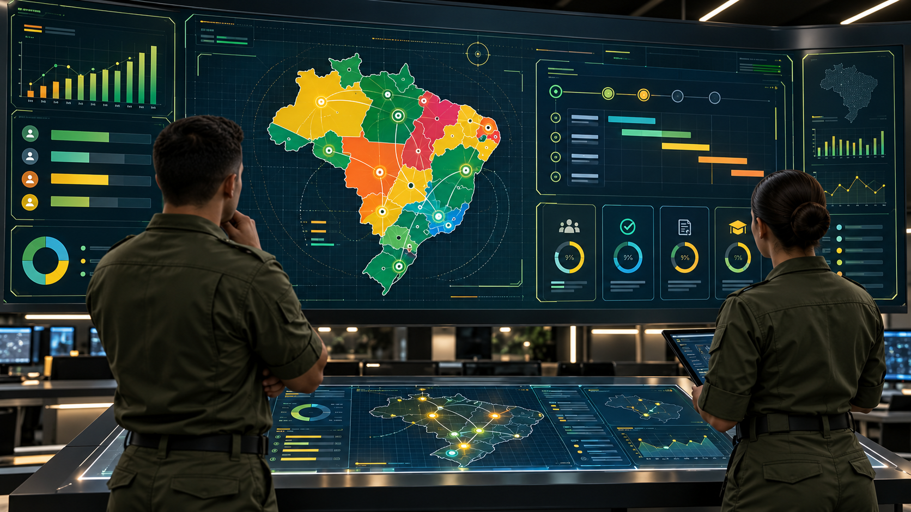
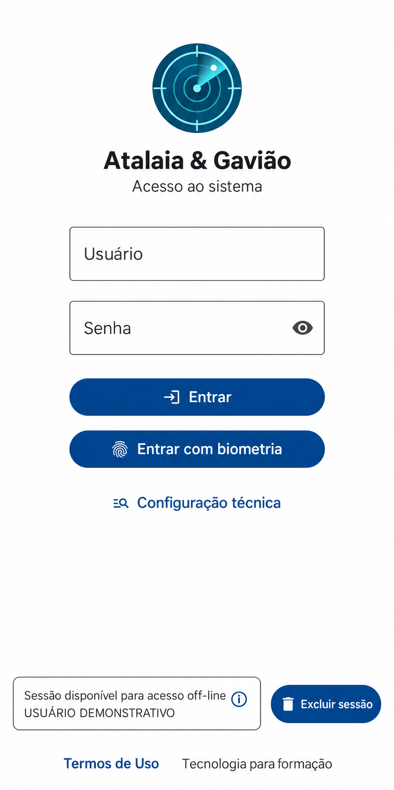

Software que transforma registros em decisão
Uma visão inteira.
Das regiões remotas à decisão.
Transformação digital com acessibilidade, integração e segurança cibernética para organizar jornadas educacionais distribuídas e manter a operação ativa mesmo quando a rede desaparece.
- Web + Androiduma experiência conectada
- Offline-firstcontinuidade em regiões remotas
- Dados acionáveisdo detalhe ao panorama
Atalaia & Gavião · visão consolidada


Interfaces públicas demonstrativas · dados e identidades genéricos
Quatro compromissos da solução
- transformação digital
- acessibilidade
- integração
- segurança cibernética
Transformação digital
Não é apenas digitalizar formulários.
É redesenhar a jornada.
Atalaia e Gavião conectam pessoas, processos e dados para substituir fluxos isolados por uma operação integrada, mensurável, acessível e resiliente.
A jornada da informação
Muitos pontos de entrada.
Uma visão verificável.
O desafio não termina no registro. A plataforma preserva contexto, aplica as mesmas regras em cada canal e leva a decisão de volta à origem do dado.
- 01Entrada distribuídaWeb e celular registram com identidade única.
- 02Validação e consolidaçãoAutorização, consistência e uma fonte comum em escala nacional.
- 03Decisão verificávelTodo indicador conserva o caminho até a evidência.


O produto
Dois olhares.
Uma mesma jornada.
Um núcleo estrutura o ciclo e os processos. O outro transforma esse conjunto em visão gerencial, acompanhamento e ação móvel. Juntos, eliminam ilhas de informação sem simplificar demais a realidade.

01Núcleo de gestão
Estrutura cada etapa.
Organiza ciclos, participantes, avaliações e relatórios com regras e permissões consistentes.
- Gestão do ciclo
- Validação e consolidação
- Rastreabilidade
Núcleo de decisão
Transforma dados em contexto.
Conecta indicadores, registros e operação móvel para revelar tendências sem perder a origem do dado.
- Visão comparável
- Acompanhamento distribuído
- Operação online e offline
Integração operacional
Da origem ao comando.
Um fluxo sem ruptura.
A informação pode nascer sem conexão, atravessar validações e chegar à decisão com identidade, contexto e histórico preservados.
01OR
OrigemEntrada distribuída
Web ou Android, inclusive sem conexão.
registro identificado02PL
DispositivoProteção local
Sessão protegida e fila persistente.
aguardando rede03TX
TransmissãoSincronização segura
Retentativas controladas, sem duplicidade.
envio confirmado04VA
ServidorValidação central
Identidade, permissão, escopo e consistência.
acesso autorizado05VI
NúcleoVisão integrada
Uma fonte para consultas, painéis e relatórios.
dado consolidado06DV
ComandoDecisão verificável
Indicadores ligados à evidência original.
ciclo concluídoA operação não para quando a conexão desaparece.
O servidor reaplica identidade, permissão e escopo.
A decisão conserva o caminho de volta à evidência.
Engenharia da solução
Tecnologias que sustentam a jornada.
Uma arquitetura web e móvel, construída para integrar bases, continuar operando em regiões remotas e proteger a informação em trânsito e no dispositivo.
Aplicação acessível
PHP, Laravel, Blade, JavaScript, Bootstrap e jQuery compõem fluxos responsivos, painéis e relatórios.
- HTML semântico
- Teclado e foco visível
- Textos alternativos
- Movimento reduzido
Integração multibanco
MySQL, Eloquent ORM, SQL estruturado, relacionamentos e consultas analíticas conectam os diferentes ciclos.
- Bases especializadas
- Views e triggers
- JSON e índices
Contrato entre canais
API REST em PHP, respostas JSON e autenticação Bearer ligam o sistema web ao aplicativo Android.
- Escopo no servidor
- Sincronização incremental
- Controle de versão
Operação em movimento
Kotlin e Jetpack Compose entregam uma interface Android nativa, com Retrofit, OkHttp e Gson na comunicação.
- WorkManager
- Biometria AndroidX
- Offline-first
Segurança em profundidade
HTTPS/TLS protege o transporte; SQLCipher protege a base local; Android Keystore guarda chaves fora do código.
- AES-256-GCM e AES-SIV
- PBKDF2 com HMAC-SHA-256
- Tokens armazenados por hash SHA-256
- Certificados X.509
Continuidade controlada
Filas persistentes, timeouts explícitos, retentativas progressivas e reconciliação preservam o trabalho sem rede.
- SQLite criptografado
- Cache local
- Envio sem duplicidade
Verificação contínua
Testes automatizados e análise de código reduzem regressões nos canais web, API e Android.
- PHPUnit e Jest
- JUnit, Espresso e MockWebServer
- PHPStan e PHPCS
Ambiente reproduzível
Docker, Nginx, PHP-FPM, Composer, Gradle e Git apoiam desenvolvimento, empacotamento e publicação controlada.
- Dependências locais
- APK assinado
- Logs técnicos sem segredos
Decisão continua humana. A solução organiza, valida e apresenta evidências; não utiliza inteligência artificial nativa para avaliar pessoas ou decidir por seus responsáveis.
Interfaces demonstrativas
Concreto o bastante para explorar. Fictício por definição.
Cada tela abaixo foi criada exclusivamente para este portfólio. Não é captura, cópia nem reconstrução fiel de qualquer ambiente real.
92%avaliado
- Concluído 184
- Parcial 11
- Pendente 05
| Participante | Atividade | Progresso | Situação | Atualização |
|---|---|---|---|---|
| P1Pessoa 014ID DEMO-014 | Coordenação Alfa | 8/8 | Concluída | Hoje, 14:32 |
| P2Pessoa 027ID DEMO-027 | Coordenação Beta | 4/8 | Parcial | Ontem, 17:08 |
| P3Pessoa 031ID DEMO-031 | Apoio Gama | 1/8 | Pendente | 12 out, 09:15 |
| P4Pessoa 046ID DEMO-046 | Coordenação Alfa | 6/8 | Parcial | 11 out, 16:40 |

Demonstração · sem dados reaisOffline não é um erro.
Offline não é um erro.
É um estado do produto.
O aplicativo carrega os dados necessários, protege a sessão local e cria registros com identidade única. Quando a rede retorna, a fila sincroniza sem duplicar o que já chegou ao servidor.
- armazenamento local protegido
- reenvio com espera progressiva
- estado visível para o usuário
- autorização novamente validada no servidor
Operação móvel resiliente
A rede pode desaparecer. O trabalho continua.
O canal móvel mantém dados necessários no aparelho, protege a sessão local e organiza uma fila segura. Quando a conexão retorna, cada item é validado novamente antes de chegar ao servidor.
Demonstração pública: pessoas, interfaces, nomes e números desta página são fictícios.
Do dispositivo ao servidor
O mesmo fluxo acompanha o usuário.
A sessão protegida libera o trabalho local. A consulta preserva o contexto já autorizado. Ao recuperar a conexão, a fila segue para validação sem exigir que o operador refaça o registro.
sessão protegida dados disponíveis sincronização controlada
Engenharia por trás da experiência
Complexidade tratada
em camadas claras.
A arquitetura integra canais e dados, reduz barreiras de uso e aplica segurança cibernética em profundidade para que a mesma regra seja respeitada em qualquer ponto da jornada.
↗Canal móvelKotlin + WorkManager
Processo redesenhado.
O digital conecta a jornada inteira, em vez de apenas reproduzir formulários isolados.
Menos barreiras para operar.
Semântica, teclado, contraste, foco visível, responsividade e redução de movimento orientam a experiência.
Uma regra, vários canais.
Web, Android, API e bancos compartilham contratos, contexto e validações centrais.
Proteção em profundidade.
Autorização no servidor, criptografia, sessões protegidas, transporte seguro e registros sem segredos.
HTML semânticoNavegação por tecladoContraste e foco visívelLayout responsivoMovimento reduzidoHTTPS/TLSAndroid KeystoreSQLCipherAES-GCM
Laboratório público
Não basta dizer.
Há código para explorar.
Exemplos autorais demonstram as decisões mais importantes com nomes, estruturas e dados fictícios. Eles não são cópias do produto privado.
Explorar exemplosEnvioRegistroWorker.kt
for (registro in fila.pendentes()) {
val resposta = api.enviar(
registro.idUnico,
registro.paraEnvio()
)
when {
resposta.sucesso -> fila.concluir(registro)
resposta.transitorio -> retry()
else -> fila.revisar(registro)
}
}Como o trabalho acontece
Produto, tecnologia e operação na mesma mesa.
O portfólio apresenta competências e responsabilidades, sem expor identidades, postos, imagens institucionais ou vínculos funcionais.
Transforma processos em fluxos compreensíveis.
Descoberta, regras de negócio, experiência do usuário e evolução incremental.
Conecta domínio, segurança e entrega.
Backend, interfaces, APIs, autorização, observabilidade e operação.
Leva o dado até onde a decisão acontece.
Análise, visualização, Android offline-first e sincronização resiliente.
Escopo público seguro
Um estudo de caso independente.
Este portfólio não é um canal oficial nem representa, endossa ou reproduz qualquer organização. Interfaces, nomes, números e situações são demonstrativos e utilizam dados fictícios.
Não são publicados código privado, dados de produção, documentos, credenciais, marcas institucionais, fotografias operacionais, endereços internos ou topologia real.
Consultar o repositório público →